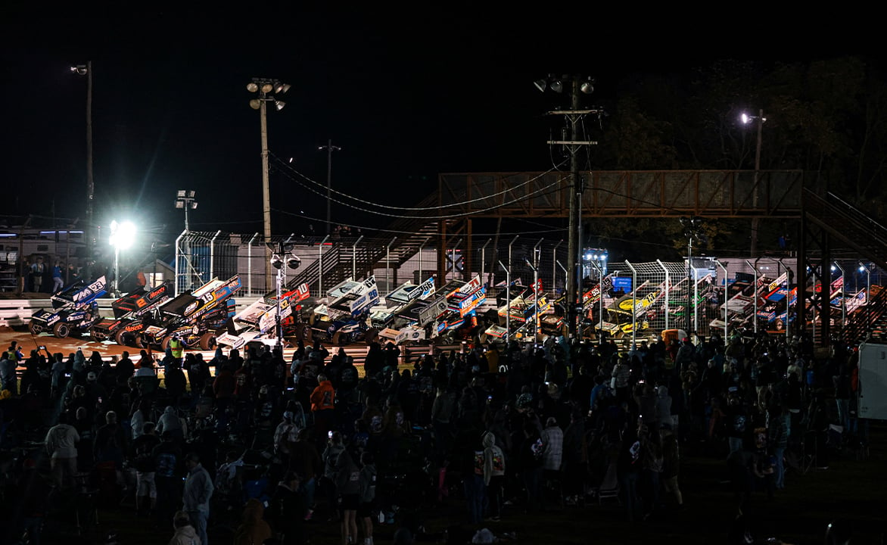

World of Outlaws Set Eight 2027 Pennsylvania Dates, Opening May 12 at Lincoln
The series will face the PA Posse in eight races at Lincoln Speedway, Williams Grove Speedway and BAPS Motor Speedway, from the Gettysburg Clash on May 12 to the 65th National Open on Oct. 1-2.

The World of Outlaws NOS Energy Drink Sprint Car Series will race eight times in Pennsylvania in 2027, the series announced Nov. 12. The dates are spread over three tracks: Lincoln Speedway, Williams Grove Speedway in Mechanicsburg and BAPS Motor Speedway in York Haven. According to World of Outlaws, the series won five of the eight Pennsylvania races against the PA Posse in 2026, and Posse drivers won three.
The swing opens Wednesday, May 12, with the Gettysburg Clash at Lincoln Speedway. Buddy Kofoid and Roth Motorsports have won the last two runnings of the race, the series said. The series then moves to Williams Grove for the HVAC Distributors Morgan Cup on Friday and Saturday, May 14-15. In 2026, Kasey Kahne won the Morgan Cup opener for his first World of Outlaws win, and David Gravel won the finale, according to World of Outlaws.
Three summer races follow. The Bricker’s Bash is set for Thursday, July 29, at BAPS Motor Speedway, where Chase Dietz won for the Posse in 2026. Williams Grove then hosts the C&D Rigging Summer Nationals on July 30-31. Kofoid and Gravel won the two 2026 Summer Nationals races, the series said.
The Pennsylvania schedule ends with the 65th J&S Classics National Open at Williams Grove on Friday and Saturday, Oct. 1-2. In 2026, Gravel won the opening night and Dietz won the National Open title and $75,000, according to World of Outlaws. The series said ticket information for the Pennsylvania races will be announced later.
The 2027 World of Outlaws season begins Feb. 10-13 with the Federated Auto Parts DIRTcar Nationals at Volusia Speedway Park in Barberville, Florida, according to the series.